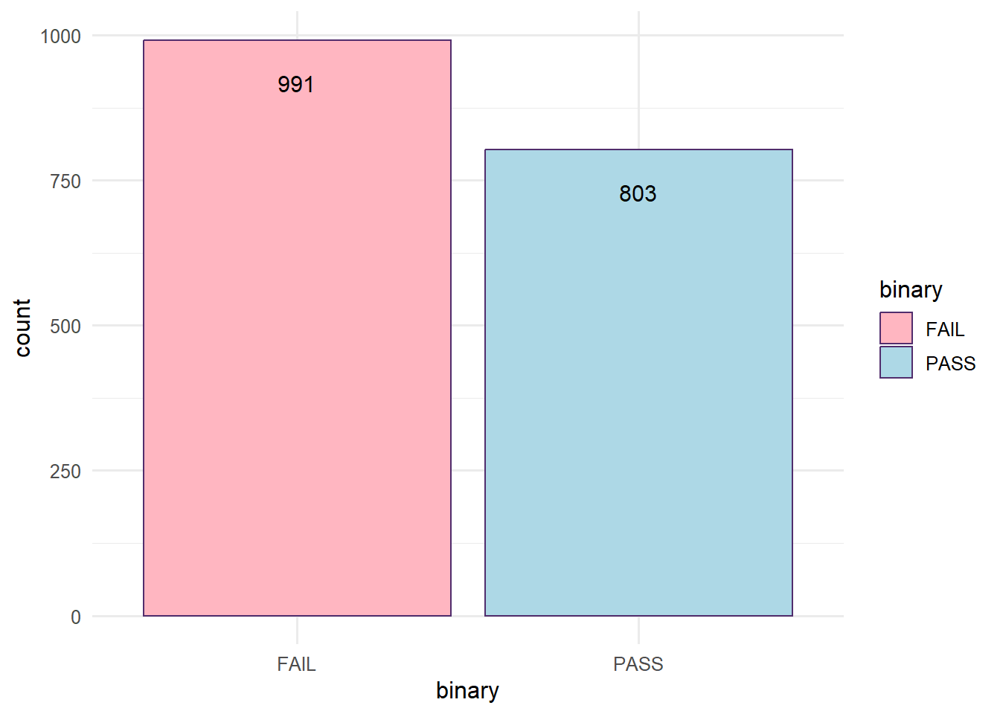
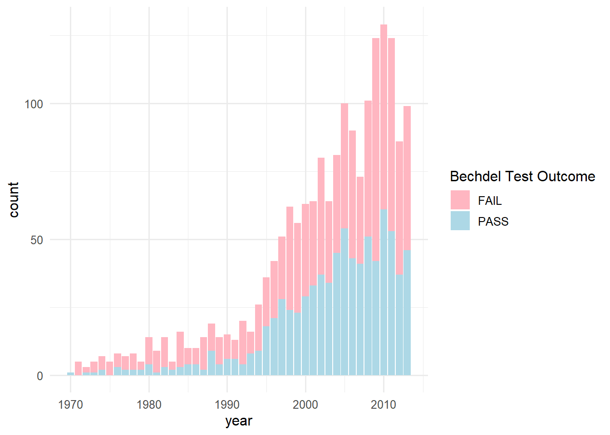
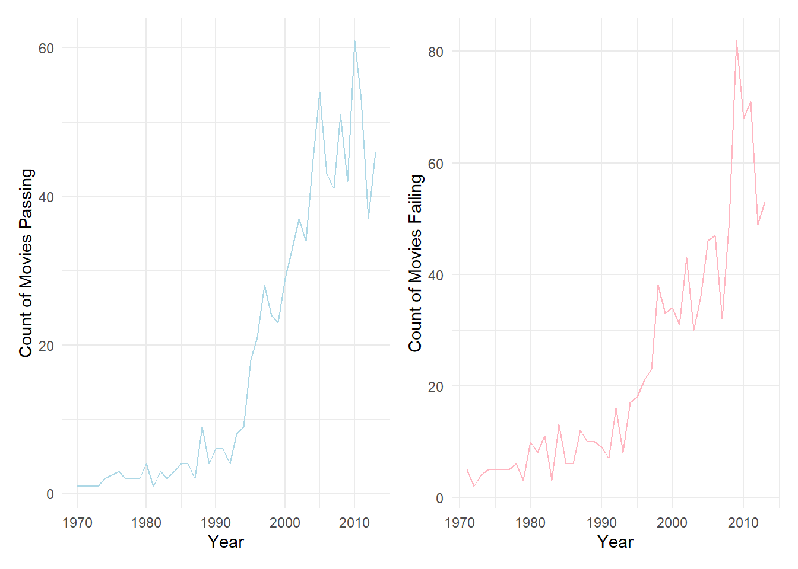
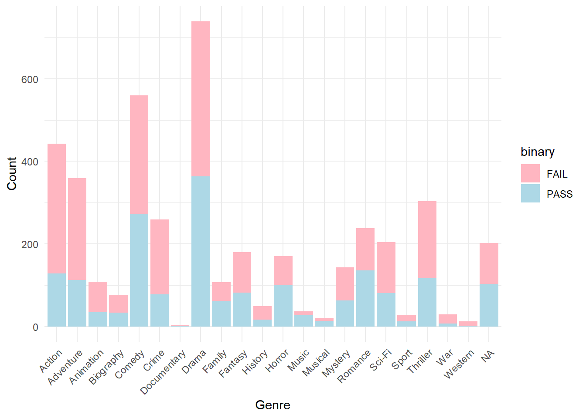
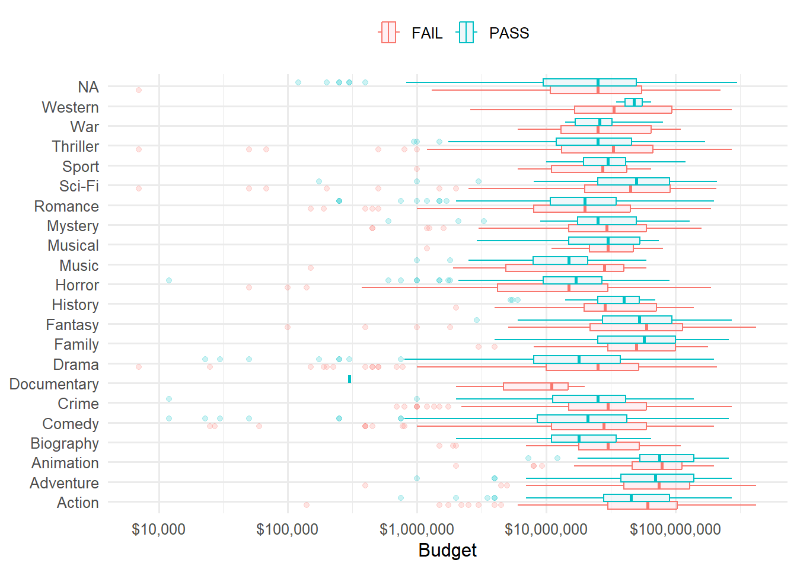
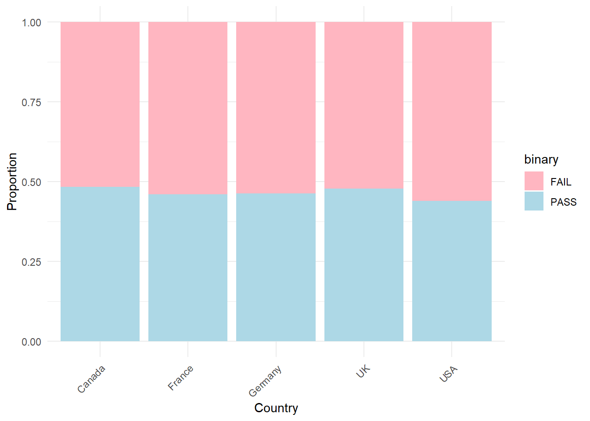
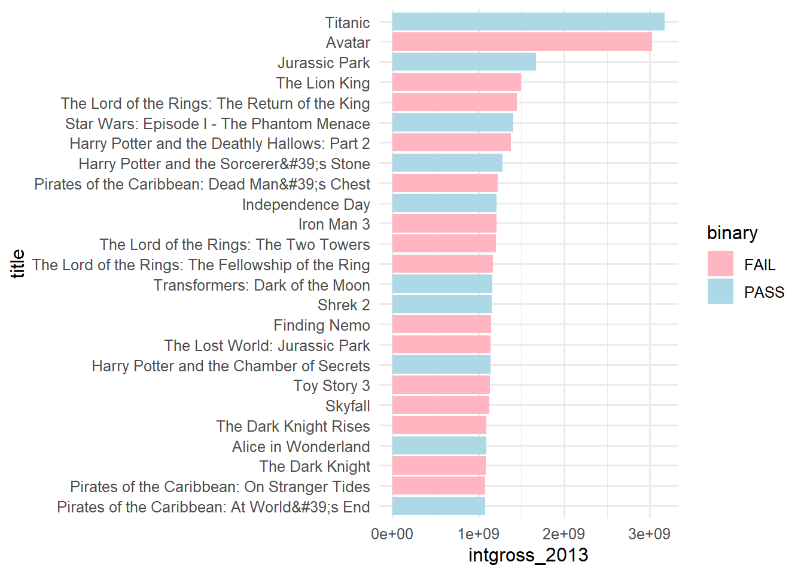
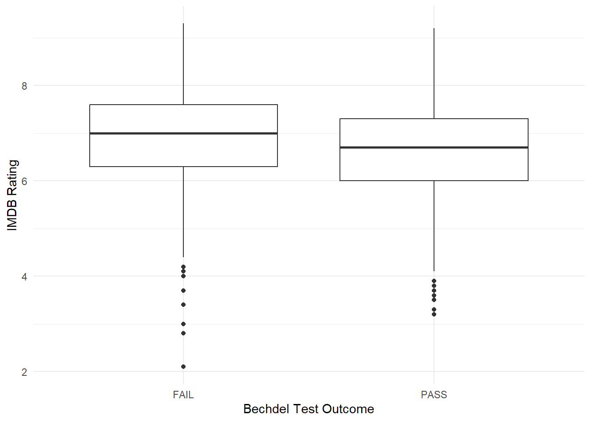
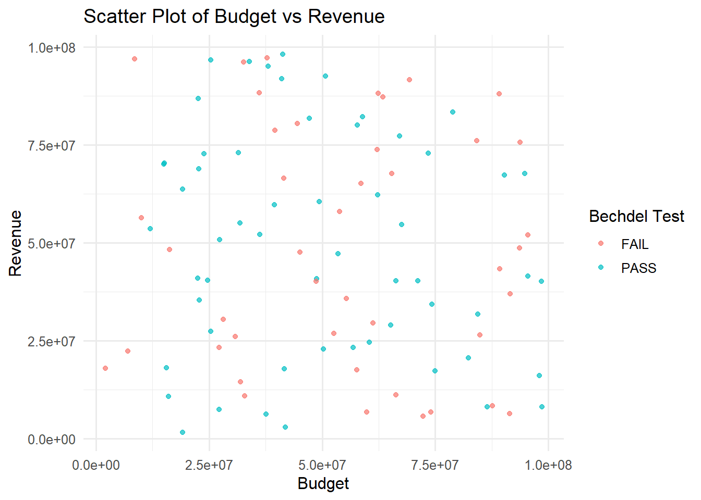
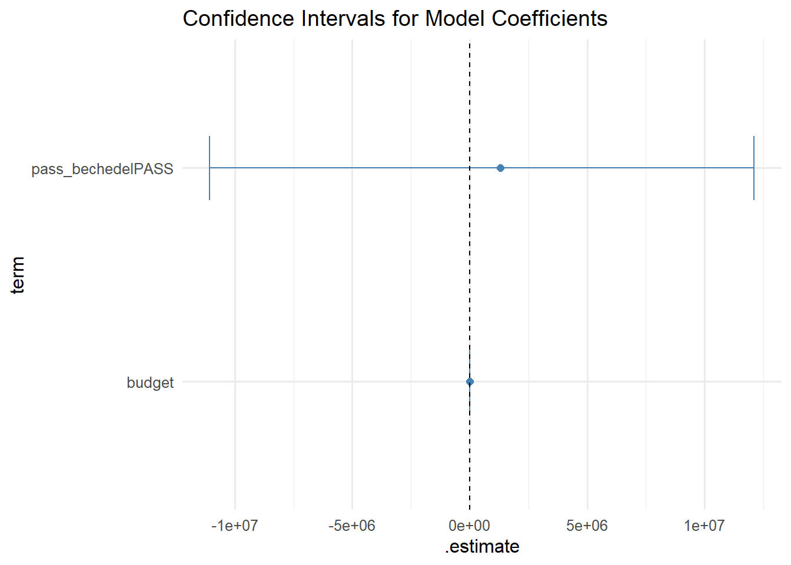

| id | year | imdb_id | title | rating |
|---|---|---|---|---|
| 9602 | 1874 | 3155794 | Passage de Venus | 0 |
| 9804 | 1877 | 14495706 | La Rosace Magique | 0 |
| 9603 | 1878 | 2221420 | Sallie Gardner at a Gallop | 0 |
| 9806 | 1878 | 12592084 | Le singe musicien | 0 |
| 9816 | 1881 | 7816420 | Athlete Swinging a Pick | 0 |
Bechdel Test
Executive Summary
In this project, I explore the varying factors including:
Genre
Rating
Country of Origin
Budget
Year
Guidance rating
Gross
that may have on impact on whether or not a movie passes or fails the Bechdel Test. We do not find substantial evidence that any of these factors have a significant role in whether or not a movie passes the test.
Background
The Bechdel test is a test used to test gender biases and representation of women in movies, TV shows, etc. Often women in film portray characters that lack depth or are depicted as certain archetypes of damsels in distress. The test was first introduced by cartoonist Alison Bechdel who said that in order to pass the test a work of fiction must:
Involve two named women characters
The two women must converse with one another
The conversation does not involve a man or any mention of a male character.
Many movies fail to pass this test and it highlights the need for more female representation in strong roles beyond male-centric themes.

Initial Research Question
Various predictor values ## Approach to Research
Data Collection and Documentation
Bechdel Test Data
The data is from a public data source call TidyTuesday and it was created by FiveThirtyEight, a polling aggregation website using Bechdel test data which analyzed over 5,000 films and whether or not they passed the test alongside TheNumbers.com which compiled a dataset of various stats on the different movies including awards, directors, ratings, revenue, etc. The data was collected to expose gender biases within film and compare whether or not those films that pass or do not pass the Bechdel test differ in budgets, ratings, revenue, etc. The set analyzes 1,794 films between the years of 1970-2013. The films in the dataset are an aggregate of the intersection between the films in the Numbers data set and the Bechdel dataset.
Raw Bechdel Data:
The Raw Bechdel data set contains 10,136 observations. Each row of the Raw Bechdel data set is a movie which contains the following 5 columns:
A Movie ID
The year it was made
The IMDB ID which is an ID assigned to each movie by the Internet Movie Database
The title of the movie
A Rating which is a scale of 0-3:
1 means the movies features at least 2 named women.
2 means that the women converse with one another
3 means that the conversation is about something other than a man.
0 means the movie is un-scored or contains none of the Bechdel features.
Below is a preview of the dataset:
Movies Data:
| year | imdb | title | binary | budget | domgross | intgross | code | budget_2013 | domgross_2013 | intgross_2013 | period_code | decade_code | imdb_id | rated | response | language | country | writer | metascore | imdb_rating | director | released | actors | genre | awards | runtime | type | poster | imdb_votes | error |
|---|---|---|---|---|---|---|---|---|---|---|---|---|---|---|---|---|---|---|---|---|---|---|---|---|---|---|---|---|---|---|
| 2013 | tt1711425 | 21 & Over | FAIL | 1.3e+07 | 25682380 | 42195766 | 2013FAIL | 13000000 | 25682380 | 42195766 | 1 | 1 | 1711425 | NA | NA | NA | NA | NA | NA | NA | NA | NA | NA | NA | NA | NA | NA | NA | NA | NA |
| 2012 | tt1343727 | Dredd 3D | PASS | 4.5e+07 | 13414714 | 40868994 | 2012PASS | 45658735 | 13611086 | 41467257 | 1 | 1 | 1343727 | NA | NA | NA | NA | NA | NA | NA | NA | NA | NA | NA | NA | NA | NA | NA | NA | NA |
| 2013 | tt2024544 | 12 Years a Slave | FAIL | 2.0e+07 | 53107035 | 158607035 | 2013FAIL | 20000000 | 53107035 | 158607035 | 1 | 1 | 2024544 | R | TRUE | English | USA, UK | John Ridley (screenplay), Solomon Northup (based on "Twelve Years a Slave" by) | 97 | 8.3 | Steve McQueen | 08 Nov 2013 | Chiwetel Ejiofor, Dwight Henry, Dickie Gravois, Bryan Batt | Biography, Drama, History | Won 3 Oscars. Another 131 wins & 137 nominations. | 134 min | movie | http://ia.media-imdb.com/images/M/MV5BMjExMTEzODkyN15BMl5BanBnXkFtZTcwNTU4NTc4OQ@@._V1_SX300.jpg | 143446 | NA |
| 2013 | tt1272878 | 2 Guns | FAIL | 6.1e+07 | 75612460 | 132493015 | 2013FAIL | 61000000 | 75612460 | 132493015 | 1 | 1 | 1272878 | R | TRUE | English, Spanish | USA | Blake Masters (screenplay), Steven Grant (based on the Boom! Studios graphic novels by) | 55 | 6.8 | Baltasar Kormákur | 02 Aug 2013 | Denzel Washington, Mark Wahlberg, Paula Patton, Edward James Olmos | Action, Comedy, Crime | 1 win. | 109 min | movie | http://ia.media-imdb.com/images/M/MV5BNTQ5MTgzNDg4OF5BMl5BanBnXkFtZTcwMjAyODEzOQ@@._V1_SX300.jpg | 87301 | NA |
| 2013 | tt0453562 | 42 | FAIL | 4.0e+07 | 95020213 | 95020213 | 2013FAIL | 40000000 | 95020213 | 95020213 | 1 | 1 | 0453562 | PG-13 | TRUE | English | USA | Brian Helgeland | 62 | 7.6 | Brian Helgeland | 12 Apr 2013 | Chadwick Boseman, Harrison Ford, Nicole Beharie, Christopher Meloni | Biography, Drama, Sport | 3 wins & 13 nominations. | 128 min | movie | http://ia.media-imdb.com/images/M/MV5BMTQwMDU4MDI3MV5BMl5BanBnXkFtZTcwMjU1NDgyOQ@@._V1_SX300.jpg | 43608 | NA |
The Movies data set contains 1,794 observations. The data set is the the product of an intersection between the raw bechdel data set (every movie that has been put through the Bechdel test by the Bechdel website) and the data set from the Numbers website which is a congregated data set of every movie to hit the box office and their various characteristics.
Exploratory Analysis and Observations
Potential Response Variables

We can see in the data-set, there are more movies that fail the Bechdel Test than pass.
Year

Figure two displays the distribution of movies produced over the years sorted by whether or not they pass the Bechdel Test. Over the years the proportions of pass to fail seem to be roughly the same.

As evident in the plot, the rate of both passing and failing moves have declined significantly since 2010 but there seems to be a slightly growing increase as of recent for both.
Genre

Parental Guidance Rating

Country of Origin
movies_sorted_country<- movies %>%
separate_rows(country, sep = ", ")
Gross

Budget

Rating

Models

